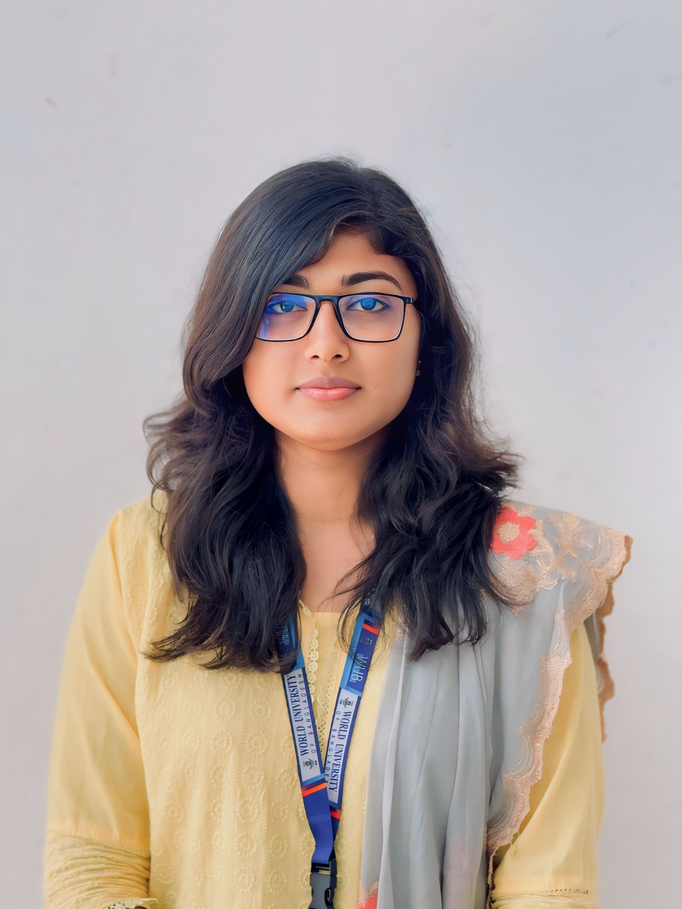

Hello, I am Sunjeda Shabbir Moon
As an engineering student, I aim to leverage my technical skills, problem-solving abilities, and eagerness to learn in a dynamic internship role. I seek to contribute meaningfully to innovative projects while gaining practical experience and deepening my understanding of real-world software development and IT solutions.

Education
-
B.Sc in Computer Science and Engineering
World University of Bangladesh
6th Semester (Ongoing)
Current CGPA: 3.10 -
HSC in Science
GPA - 3.96 Passing Year - 2022
Govt. Fakirhat Fazilatunnesa Mujib Mohila Degree College, Jessore. -
SSC in Science
GPA - 4.56 Passing Year - 2018
Dakhin Banasree Model High School & College, Dhaka.
Extracurricular Activities
- Public Relations Executive - Robotics Club, World University of Bangladesh
- Involved in planning, outreach, and maintaining external relations for the club
- Cricket Player - Clemon Uni Campus Cricket Tournament 2025
- Represented the team of CSE department in the cricket tournament
- Blood Donor - WUB Blood Donors
- Actively participate in voluntary blood donation drives organized by the university's senior students
Skills
HTML
CSS
C
C++
MS Word
MS Excel
MS Powepoint
Internet Browsing
Emailing
Event Coordination
Communication
Public Speaking
Teamwork
Languages
- Bangla: Native
- English: Full Working Proficiency
- Hindi: Full Working Proficiency
Job Experience
-
Event Assistant - Unitech Textile Limited
Part Time | 23rd TexTech Bangladesh International Expo 2024
Supported booth operations assisted with International visitor engagement.
Helped coordinate schedules and managed logistics -
Event Assistant - Bangladesh Just Transition Academy
Part Time | Organized By International Labour Organization
Assisted in organizing event logistics.
Managed registration and guest support. -
Social Media Manager - Teachers Today Limited
Remote | September 2024 - October 2024
Managed and created content for the company's social media platforms, increasing engagement and online visibility.
Scheduled regular posta, monitored performance metrics, and responded to customer interactions.
Collaborated with the sales and design teams to align social media strategies with marketing goals. -
Online Sales Representative - Teachers Today Limited
Remote | August 2024 - September 2024
Handled online customer queries and provided detailed information about service.
Assisted in managing digital sales channels and maintaining accurate customer databases.
Contributed to sales strategy and supported marketing efforts through social media outreach.